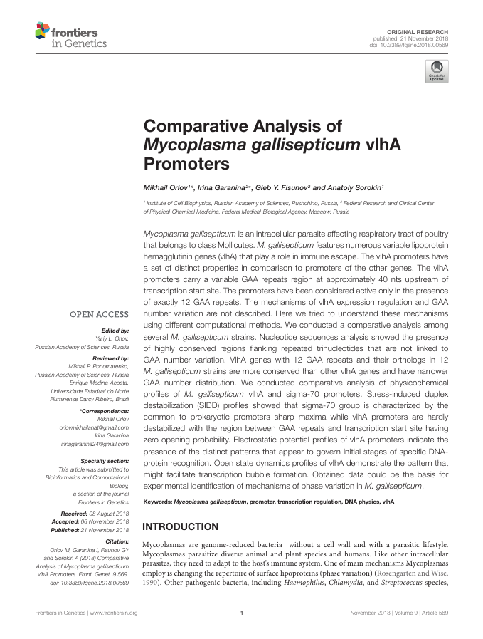

Mikhail A. Orlov publications and related activity
Research papers

- Orlov, M. A., & Sorokin, A. A. (2020). DNA Sequence, Physics, and Promoter Function: Analysis of High-Throughput Data on T7 Promoter Variants Activity. Journal of Bioinformatics and Computational Biology. https://doi.org/10.1142/s0219720020400016
- Ryasik, A., Orlov, M., Zykova, E., Ermak, T., & Sorokin, A. (2018). Bacterial promoter prediction: Selection of dynamic and static physical properties of DNA for reliable sequence classification. Journal of Bioinformatics and Computational Biology, 16(1), 1840003. https://doi.org/10.1142/s0219720018400036
- Orlov, M. A., Ryasik, A. A., & Sorokin, A. A. (2018). Destabilization of the DNA Duplex of Actively Replicating Promoters of T7-Like Bacteriophages. Molecular Biology, 52(5), 686–692. https://doi.org/10.1134/s0026893318050114
- (in Russian) Orlov, M. A., Kamzolova, S. G., Ryasik, A. A., Zykova, E. A., & Sorokin, A. A. (2018). Stress-induced duplex destabilization (SIDD) profiles for T7 bacteriophage promoters. Computer Research and Modeling, 10(6), 867–878. https://doi.org/10.20537/2076-7633-2018-10-6-867-878